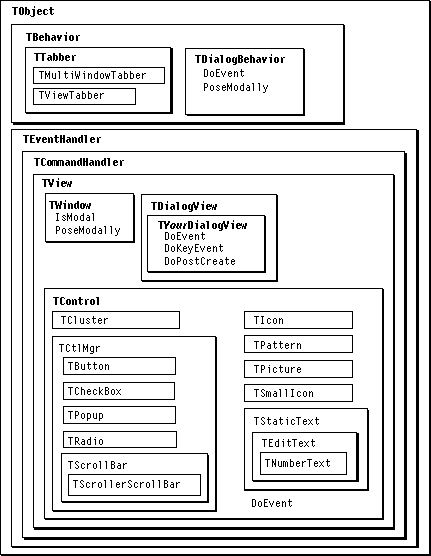

Overview
A dialog box is a special type of window used in Macintosh applications to display information and receive input from the user. A control is a user interface item, such as a radio button or checkbox, that commonly appears on a dialog box.In MacApp, a dialog box is just another type of window, with its own hierarchy of views. MacApp supplies the
TDialogViewclass for building a dialog, as well as a number of view subclasses to represent Macintosh Control Manager controls, such as buttons and checkboxes.The
TDialogViewclass automatically creates aTDialogBehaviorobject to supply dialog-box behavior. The dialog behavior object works with the dialog view to validate view data when the dialog box is closed.MacApp provides a behavior class that supports tabbing between fields in a dialog box. The tabbing support gives a data-entry view a chance to validate its data when a user tabs to another field. Tabbing is described in "Tabbing Between Views," beginning on page 243.
You can use a view template to define a window and view hierarchy for a dialog box. You can then create the window with
NewTemplateWindowand display it as either a modal or a modeless dialog box. These terms are described in "Modal Versus Modeless Dialog Boxes," beginning on page 240.Figure 19-1 shows the classes and methods used with dialog boxes.
Figure 19-1 Dialog-box classes and methods
- IMPORTANT
- If you define a custom view class and use it in a view resource, don't forget to register the class, using the
MA_REGISTER_CLASSmacro (as described on page 30). Otherwise, you'll get an error message when your application tries to create the view hierarchy. (In anodebugversion, the message includes the words "Please contact the developer." In adebugversion, you'll see the famous "Call Apple for a secret decoder ring.")
